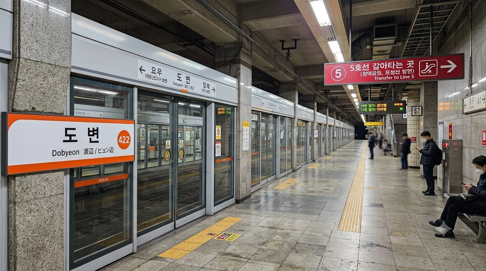
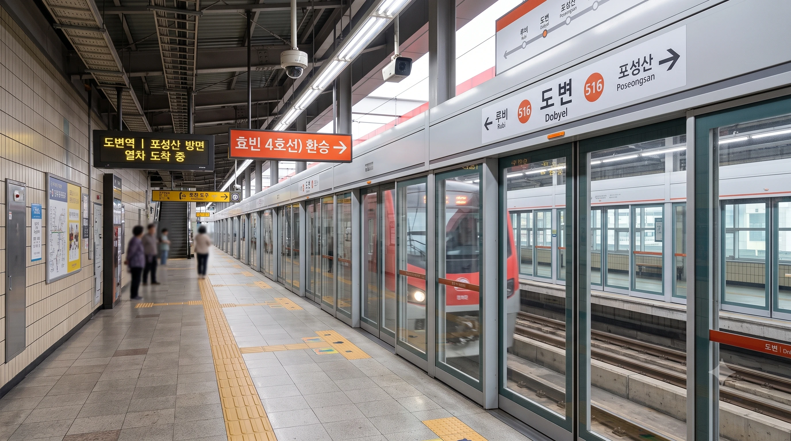

효빈 도시철도 4호선 422번 및 효빈 도시철도 5호선 516번. 효빈광역시 탄성군 도변읍 도변리에 소재한 환승역이다. 지하 대형 중전철인 4호선과 고가 경전철인 5호선이 입체적으로 교차하는 독특한 구조를 띄고 있다.
효빈광역시 탄성군 도변읍의 중심지에 위치한 핵심 교통 결절점이자 환승역이다. 4호선(2003년 개통)과 5호선(2011년 개통)이 교차하며, 탄성군 내에서 가장 유동 인구가 많은 역 중 하나다. 역 주변은 도변읍의 행정, 상업 중심지로 롯데마트 도변점, 도변읍 행정복지센터 등이 위치해 있다. 역사 내부에는 4·5호선 통합 유실물 센터가 있어 분실물을 찾으러 오는 사람들이 많이 방문한다.
이 역의 가장 큰 특징은 지하 2층에 위치한 중전철 4호선과 지상 2층 고가도로 형태로 지어진 경전철 5호선 간의 수직 환승 구조다. 4호선은 도변대로 지하를 깊게 관통하지만, 나중에 지어진 5호선은 건설비 절감과 좁은 도심 구간의 효율적인 통과를 위해 고가 경전철 방식으로 지어졌다. 이로 인해 지하 승강장에서 지상 고가 승강장까지 무려 4개 층을 수직으로 가로지르는 초대형 에스컬레이터와 환승 통로가 설치되어 있다. 에스컬레이터의 경사와 길이가 상당하여 아찔함을 느끼는 승객들의 체감 환승 거리가 꽤 긴 편으로, 출퇴근 시간대에는 '도변역 등반'이라는 우스갯소리가 나올 정도다.
1번~4번 출구는 4호선 지하 대합실과 직접 연결되어 있으며, 5번과 6번 출구는 5호선 지상 고가역사에서 외부로 뻗어나가는 육교 및 계단 형태로 설치되어 있다.
|
4
5
도변역 출구 정보
|
||
|---|---|---|
| 번호 | 주요 시설 및 방향 | 비고 |
| 1 | 수안초등학교, 도변고등학교 | |
| 2 | 도변사거리, 도변 버스정류장 | |
| 3 | 롯데마트 도변점 | |
| 4 | 도변읍행정복지센터 | |
| 5 | 도변읍행정복지센터 | |
| 6 | 롯데마트 도변점, 도변초등학교 | |
| 도변역 이용객 통계 | ||||
|---|---|---|---|---|
| 연도 | 4 4호선 | 5 5호선 | 총합 | 비고 |
| 2020년 | 12,716명 | 12,834명 | 25,550명 | |
| 2021년 | 12,826명 | 13,675명 | 26,501명 | |
| 2022년 | 15,678명 | 16,051명 | 31,729명 | |
| 2023년 | 16,020명 | 16,199명 | 32,219명 | |
| 2024년 | 16,298명 | 16,393명 | 32,691명 | |
※ 지하 2층 2면 2선 상대식 승강장
2003년에 개통된 전형적인 지하 중전철 승강장의 모습을 띄고 있다. 개통 당시의 튼튼하고 중후한 화강암 대리석 마감이 벽면에 남아 있으며, 승강장 폭이 넓어 출퇴근 시간대 대규모 환승 인파를 수용하기에 용이하다. 승강장 중앙의 넓은 계단과 에스컬레이터를 통해 지상 5호선 환승 통로로 직결된다.

| 요 우 ↑ | |||
| 하 | ㅣ | ㅣ | 상 |
| ↓ 잠 재 | |||
| 상 | 4 효빈 도시철도 4호선 | 해운산업지구 방면 |
| 하 | 4 효빈 도시철도 4호선 | 천가 방면 |
※ 지상 2층 2면 2선 고가 상대식 승강장 (경전철)
도로 중앙의 고가교 위에 지어진 경전철 전용 고가 승강장이다. 4호선에 비해 열차 량수가 적어 승강장 길이는 짧은 편이나, 채광창을 통해 자연광이 들어와 무척 밝고 쾌적하다. 승강장에서 유리창 너머로 도변읍 시내의 분주한 도로 전경을 시원하게 내려다볼 수 있다. 주변 주거 단지의 소음 피해를 막기 위해 선로와 승강장 외부가 거대한 밀폐형 방음 터널 구조로 덮여 있는 것이 특징이다.

| 루 비 ↑ | |||
| 하 | ㅣ | ㅣ | 상 |
| ↓ 포성산 | |||
| 상 | 5 효빈 도시철도 5호선 | 청덕공원 방면 |
| 하 | 5 효빈 도시철도 5호선 | 포성산 방면 |
효빈광역시 시내버스 노선들이 주로 정차한다.
| 구분 | 정류소명 | 노선 번호 |
|---|---|---|
| 순방향 | 도변역 | 19, 40, 42, 45, 48, 83, 84, 88, 472, 481, 491, 492, 522, 752, 841, 881, 도변01, 탄성01, 탄성03 |
| 역방향 | 도변역(건너편) | 40-1, 45-1, 48-1, 84-1, 88-1, 421, 751, 841, 881, 도변01-1, 탄성01-1, 탄성03-1 |
효빈 도시철도 4호선과 5호선의 환승역인 이 역은 '와타나베 요우(渡辺 曜)' 성지순례의 핵심 코스로 통한다.
2023년, 누마즈에서 강제 추방당한 고립주의자 윤재훈이 한국으로 돌아와 분풀이로 도변역과 요우역에서 난동을 부리다, 팬들에게 **물세례**를 맞고 검거된 사건이다.